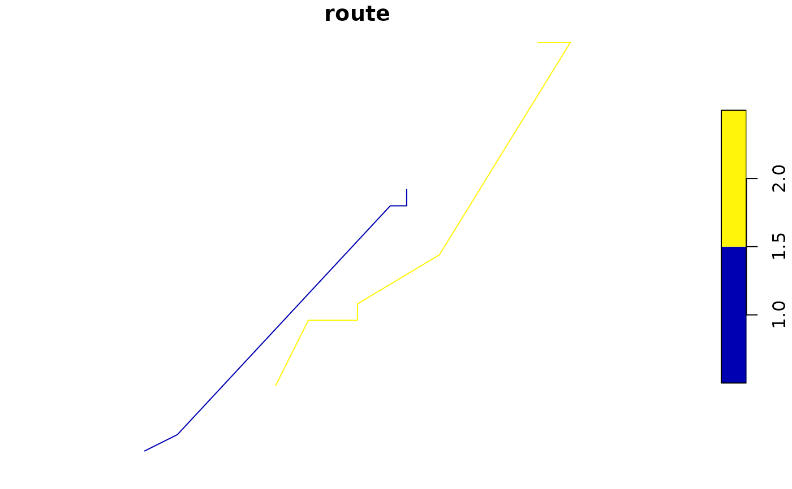

Create stochastic migration routes for a species by sampling appropriate starting locations and then routing for the duration of the migration window.
Arguments
- bf
BirdFlowmodel- n
the number of routes to generate
- migration
"prebreeding", "pre", or "spring" for the prebreeding migration; or "postbreeding", "post", or "fall" for the postbreeding migration.
- season_buffer
a buffer in timesteps (likely weeks) to add to the beginning and end of the season. The default of 1 means we start a week before the metadata suggests the season starts and continue one week past the end.
Value
This will likely change. Currently returns a list with:
- points
A dataframe with columns:
x,ycoordinates of point along route
datedate associated with that point
timesteptimestep associated with point
routeunique id for that route or individual
ilocation index for the point (see
i_to_xy())stay_idwithin each route a sequential id for locations
stay_lenhow many timesteps was the Bird at that point during the stay (minumum of 1)
- lines
a sf object containing one line per route.
Details
The two migration periods are defined based on the species information in the BirdFlow model:
prebreedingmigration starts at
species_info("nonbreeding_end")and ends atspecies_info("breeding_start")postbreedingmigration starts at
species_info("breeding_end")and ends atspecies_info("nonbreeding_start")
See also
route()allows setting the starting locations explicitly.predict(BirdFlow) projects future or past
lookup_season_timesteps()does what its name suggests.
Examples
bf <- BirdFlowModels::amewoo
rts <- route_migration(bf, 2)
plot(rts$lines)

head(rts$points)
#> x y route timestep date i stay_id stay_len
#> 1 874913.1 4382073 1 2 2019-01-11 1189 1 9
#> 2 874913.1 4382073 1 3 2019-01-18 1189 1 9
#> 3 874913.1 4382073 1 4 2019-01-25 1189 1 9
#> 4 874913.1 4382073 1 5 2019-02-01 1189 1 9
#> 5 874913.1 4382073 1 6 2019-02-08 1189 1 9
#> 6 874913.1 4382073 1 7 2019-02-15 1189 1 9